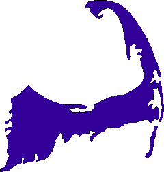
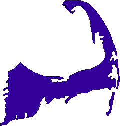

1. Cod has more lighthouses than any other place in the US.
2. Several species of endangered birds and mammals rely on resources in Cape Cod Bay, such as piping plovers, roseate terns, and the endangered North Atlantic right whale.
3. Cape Cod is in the shape of a flexed arm with a clenched fist.
4. The Cape Cod region is rich in many fish, not just cod, which it is named for. Here are some examples: blue-finned tuna, sand eel, bonito, mackerel, Pollock, haddock, and flounder.
5. Historically, Provincetown (which is at the northern tip of the cape) has been a haven for the LGBTQIA+ community for many decades.
6. About Provincetown, it's not even a province! It's just a town. That's confusing.
7. Cape Cod has an extremely low crime rate compared to the rest of the country.
8. Cape Cod Hosts the Largest Historic Districts in the US.
9. The first documented comet sighting occurred in Cape Cod.
10. The oldest windmill on Cape Cod is the Judah Baker Windmill, constructed in 1791.
 
